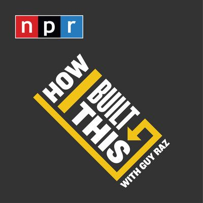
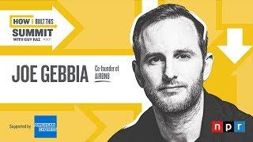

How I Built This (NPR, ~800 episodes):
founders share their setbacks and doubts
A 7-week course with 4 founder guest lectures, vs. a control group (Matsui et al., 2020)
Vicarious exposure alone may not be enough
Education–intention link is small and depends on pedagogy (Bae et al., 2014; Nabi et al., 2017)
Bandura, 1997; Newman et al., 2019; Zhao et al., 2005; Taji et al., 2023
What if students could rehearse
their own entrepreneurial future,
instead of listening to someone else’s?
Put students on a founder podcast
as their own future self,
with a script GenAI writes from their story
Podcast
The format of
How I Built This
Role-play
You are the guest,
not the listener
GenAI
An interview from
your own story
Podcasts by themselves have limited evidence for learning (Gunderson & Cumming, 2022)
Future-Me, On Air
Supporting Entrepreneurial Self-Efficacy through
Personalized GenAI Podcast Role-Play
From audience to protagonist of your own future
Target: upper-division undergrads who know effectuation basics
▶ Demo video (2 min)
“It is 2030. You started a small project based on something you already knew and someone you already knew. The host asks about the moment your original plan stopped working.”
Example setting for the interview
Before class: listen to 2–3 other pairs’ podcasts
People grow into a new role in three steps (Ibarra, 1999)
Guest lectures stop at step 1 —
Future-Me is designed for all three
The AI drafts from your own story;
you improvise and perform it
The podcast is not content to consume —
it is a record of myself acting as a founder
Backup
Q&A slides
Here, students do not just meet their future self —
they speak as it, out loud
ESE mediates learning / experience → intention (Zhao et al., 2005). GenAI-supported EE, ESE and intention are positively associated in a cross-sectional SEM (Xie & Wang, 2025, n = 346) — not a causal test
| Role-play (enact) | Read & reflect | |
|---|---|---|
| Personalized script | Full Future-Me | Script only |
| Generic founder script | Generic role-play | Founder story |
Stage 2 (with enough sample): a 2 × 2 design tells whether “my own story” or “performing it myself” moves ESE
Action-based training raised ESE and later entrepreneurial action (Gielnik et al., 2015, RCT); safe-to-fail learning with reflection (Pittaway & Cope, 2007)